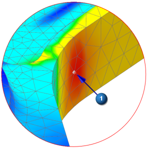
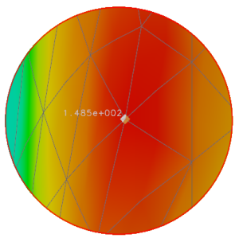

Identify numerical results
You can use the Identify command to obtain numerical results at specific nodes or elements.
 Identify Results (Post Processing group)
Identify Results (Post Processing group)
-
 (using the probe tool)
(using the probe tool)

-
The numerical value appears next to the selection in the contour plot.
-

-
Make additional selections and notice that a statistical summary of the numerical values from all the selections appears in the Identify dialog box.
-
Values NodeID Min 111.887 9519 Max 148.518 9886 Sum 260.405 -- Avg 130.202 -- -
The statistical results depend on the nodes you select.
-
Close